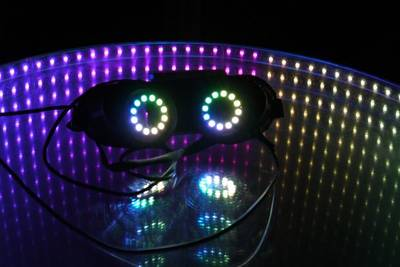
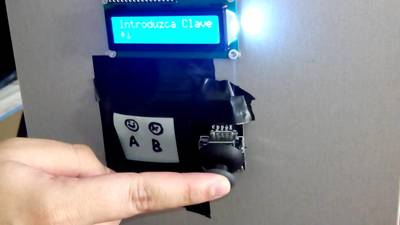

2016-02-18 - Nº 42

Editorial
Aqui está a Newsletter Nº 42 no seu formato habitual. Agora às quintas-feiras. Se gostar da Newsletter partilhe-a!
Todas as Newsletters encontram-se indexadas no link.
Esta Newsletter tem os seguintes tópicos:
Esta semana a Microchip lançou uma plataforma baseada na Cloud para a programação dos seus Microcontroladores. A ARM apresentou o Cortex-R8 que vai permitir velocidades muito elevadas no 5G. A Samsung apresenta o seu eco-sistema aberto IoT baseado na plataforma ARTIK. A Google apresenta a sua "Cloud Vision API" uma interface que permite detectar e identificar objectos, ler texto ou identificar logotipos nas imagens
Na Newsletter desta semana apresentamos diversos projetos de maker e na rubrica "Documentação" apresentamos quatro livros (eBooks) que podem ser descarregados livremente e que esta semana são sobre programação em PHP, um livro sobre ADA, um livro sobre a utilização da linha de comando em Linux e um livro sobre introdução à programação em GO. São também apresentados 6 livros que foram editados digitalmente pela UsBorne e que embora já sejam antigos ainda retêm informação útil. Por fim, na rubrica Gadgets em Destaque falamos do PSOC5 LP da Cypress, num artigo escrito em colaboração com o João Nuno Carvalho e que permite dar os primeiros passos com este Kit.
 João Alves ([email protected])
João Alves ([email protected])
O conteúdo da Newsletter encontra-se sob a licença  Creative Commons Attribution-NonCommercial-ShareAlike 4.0 International License.
Creative Commons Attribution-NonCommercial-ShareAlike 4.0 International License.
Novidades da Semana ^
-
"MPLAB Xpress Cloud-Based IDE is an online development environment that contains the most popular features of our award-winning MPLAB X IDE. This simplified & distilled application is a faithful reproduction of our desktop-based program, which allows users to easily transition between the two environments."
ARM Cortex-R8 Processor Trail-blazes 5G Need for Speed
"The new ARM Cortex-R8 processor will enable chip designers to double the performance of ARM-based modem and mass storage device SoCs. ARM's latest real-time CPU offers the low latency, high performance and power efficiency demanded by future 5G modems and mass storage devices. The processor is available for licensing now and silicon is expected in 2016. A quad-core configuration dramatically boosts the total Cortex-R8 performance, which when combined with its real time features and extended low-latency memory makes Cortex-R8 the highest performing processor in its class."
-
"Samsung Electronics announced significant momentum for the SAMSUNG ARTIK™ IoT platform. The company announced that the SAMSUNG ARTIK platform is commercially available – a big step forward in bringing the Internet of Things (IoT) to everyday life. SAMSUNG ARTIK development kits can be ordered from Samsung’s channel partner Digi-Key Electronics starting February 22. The company also introduced a new Certified ARTIK Partner Program (CAPP) to make partner services and platforms readily available to help accelerate the development and time-to-market for IoT projects."
Google Cloud Vision API enters Beta, open to all to try!
"Today, we're announcing the beta release of Google Cloud Vision API. Now anyone can submit their images to the Cloud Vision API to understand the contents of those images — from detecting everyday objects (for example, “sports car,” “sushi,” or “eagle”) to reading text within the image or identifying product logos. With the beta release of Cloud Vision API, you can access the API with location of images stored in Google Cloud Storage, along with existing support of embedding an image as part of the API request. We’re also announcing pricing for Cloud Vision API and added additional capabilities to identify the dominant color of an image. For example, you can now apply Label Detection on an image for as little as $2 per 1,000 images or Optical Character Recognition (OCR) for $0.60 for 1,000 images. Pricing will be effective, starting March 1st."
Ciência e Tecnologia ^
First all-antiferromagnetic memory device could get digital data storage in a spin
"If you haven’t already heard of antiferromagnetic spintronics it won’t be long before you do. This relatively unused class of magnetic materials could be about to transform our digital lives. They have the potential to make our devices smaller, faster, more robust and increase their energy efficiency. Physicists at The University of Nottingham, working in collaboration with researchers in the Czech Republic, Germany and Poland, and Hitachi Europe, have published (14:00 EST Thursday January 14 2016) new research in the prestigious academic journal Science which shows how the ‘magnetic spins’ of these antiferromagnets can be controlled to make a completely different form of digital memory."
-
"Long-term survival has been one of the most studied of the extraordinary physiological characteristics of cryptobiosis in micrometazoans such as nematodes, tardigrades and rotifers. In the available studies of long-term survival of micrometazoans, instances of survival have been the primary observation, and recovery conditions of animals or subsequent reproduction are generally not reported. We therefore documented recovery conditions and reproduction immediately following revival of tardigrades retrieved from a frozen moss sample collected in Antarctica in 1983 and stored at -20 °C for 30.5 years. We recorded recovery of two individuals and development of a separate egg of the Antarctic tardigrade, Acutuncus antarcticus, providing the longest records of survival for tardigrades as animals or eggs. One of the two resuscitated individuals and the hatchling successfully reproduced repeatedly after their recovery from long-term cryptobiosis. This considerable extension of the known length of long-term survival of tardigrades recorded in our study is interpreted as being associated with the minimum oxidative damage likely to have resulted from storage under stable frozen conditions. The long recovery times of the revived tardigrades observed is suggestive of the requirement for repair of damage accrued over 30 years of cryptobiosis. Further more detailed studies will improve understanding of mechanisms and conditions underlying the long-term survival of cryptobiotic organisms."
-
"Bhavin Shastri, a Banting postdoctoral fellow in our group, has recently conducted research in using graphene as a saturable absorber element in neuron-inspired laser processors. Novel materials and devices in photonics have the potential to revolutionize optical information processing, beyond conventional binary-logic approaches. Laser systems offer a rich repertoire of useful dynamical behaviors, including the excitable dynamics also found in the time-resolved “spiking” of neurons. Spiking reconciles the expressiveness and efficiency of analog processing with the robustness and scalability of digital processing. We demonstrate a unified platform for spike processing with a graphene-coupled laser system. We show that this platform can simultaneously exhibit logic-level restoration, cascadability and input-output isolation—fundamental challenges in optical information processing. We also implement low-level spike-processing tasks that are critical for higher level processing: temporal pattern detection and stable recurrent memory. We study these properties in the context of a fiber laser system and also propose and simulate an analogous integrated device. The addition of graphene leads to a number of advantages which stem from its unique properties, including high absorption and fast carrier relaxation. These could lead to significant speed and efficiency improvements in unconventional laser processing devices, and ongoing research on graphene microfabrication promises compatibility with integrated laser platforms."
It’s a 3D printer, but not as we know it
"3D printing techniques have quickly become some of the most widely used tools to rapidly design and build new components. A team of engineers at the University of Bristol has developed a new type of 3D printing that can print composite materials, which are used in many high performance products such as tennis rackets, golf clubs and aeroplanes. This technology will soon enable a much greater range of things to be 3D printed at home and at low-cost."
Bionic eye returns sight to the blind
"What if you could cure blindness as easily as turning on the lights? That’s what one doctor and his team are hoping to achieve with a clinical trial that uses a new form of retina implant to return sight to patients who have lost the ability to see. And for one of the six patients, it’s been a pretty incredible journey. Rhian Lewis was just a toddler when her parents noticed she had trouble seeing in the dark. Doctors discovered Lewis suffered from Retinitis Pigmentosa, a degenerative disease that would ultimately cause her to completely lose sight in her right eye, and most of it in her left. For the last 16 years, Lewis has been mostly blind."
UCLA scientists create graphene barrier to precisely control molecules for making nanoelectronics
"Gardeners often use sheets of plastic with strategically placed holes to allow their plants to grow but keep weeds from taking root. Scientists from UCLA’s California NanoSystems Institute have found that the same basic approach is an effective way to place molecules in the specific patterns they need within tiny nanoelectronic devices. The technique could be useful in creating sensors that are small enough to record brain signals."
Documentação ^
A documentação é parte essencial do processo de aprendizagem e a Internet além de artigos interessantes de explorar também tem alguma documentação em formato PDF interessante de ler. Todos os links aqui apresentados são para conteúdo disponibilizado livremente pelo editor do livro.
Livros
PHP Reference: Beginner to Intermediate PHP5
"A collection of over 250 PHP functions with clear explanations in language anyone can understand, followed with as many examples as it takes to understand what the function does and how it works. This book includes numerous additional tips, the basics of PHP, MySQL query examples, regular expressions syntax, and two indexes to help you find information faster: a common language index and a function index. When the internet is not around or you want a simpler explanation along with all the technical details, this book has all of that and more."
-
"Ada Programming is a tutorial teaching the Ada programming language. Ada puts unique emphasis on, and provides strong support for, good software engineering practices that scale well to very large software systems (millions of lines of code, and very large development teams)."
-
"Designed for command-line users of all levels, the book takes readers from the first keystrokes to the process of writing powerful programs in the command lineOCOs native language. Along the way, the author explores basic commands and file system navigation, OS configuration, classic command-line programs, shell programming, and much more, making The Linux Command Line an essential guide for all Linux users who wish to exploit the full power of their systems."
An Introduction to Programming in Go
"A short, concise introduction to computer programming using the language Go. Designed by Google, Go is a general purpose programming language with modern features, clean syntax and a robust well-documented common library, making it an ideal language to learn as your first programming language."
Modelos 3D ^
Com a disponibilidade de ferramentas que permitem dar azo a nossa imaginação na criação de peças 3D e espaços como o thingiverse para as publicar, esta rubrica apresenta alguns modelos selecionados que poderão ser úteis.
Parametric Battery Pack Holder
I made this design to be able to pack 18650 Li-ion batteries together for use in DIY projects. It was designed for 18650 type batteries but it will work with different battery sizes (as long as they are cylinders).
RepKey
Here is my replicate-able key/wrench that I use to build my RepRap Prusa Mendel at the moment. It takes standard hex bits and has also got a M8 nut wrench in the center. It can take pretty much load, that depends on how well your print went. Mine is printed on the UP! 3d printer.
Vise for Holding a PCB (or other lightweight items)
This thing is a vise that I made to hold a PCB while soldering. It will also accomodate other light weight items. The working space between the jaws is 100mm. There are tabs on the jaws to allow the vise to be secured to a table (a little masking tape also works).
It requires a 5mm diameter threaded steel rod of about 200mm in length with two or three washers, two normal nuts, and a locking nut to match.
Print the handle, left and right sides, and two backbones. I printed with a layer of .36 and a fill of .25. Assemble gluing the backbones into the left (stationary) side. Locking nut in handle. Two washers between handle and left jaw. One washer (small one) and two nuts on other side of left jaw from handle with second nut locking the pair in place on the threaded rod. Final nut on outside of right (moving) jaw in recess built for it. The nuts that fit into recesses should stay put based on friction but if not use some epoxy!
This is version two of what was originally uploaded. There is now a recess in the left handle for the two locking bolts. This allows the vise to close completely. There is also a second handle now included. This handle has a ball and joint feature that should allow the grip to rotate as it is turned. This does require some degree of printer precision. I would recommend printing it with a layer height of .3 or less. You may have to use some amount of force, and a pair of pliers or visegrips, to break loose any adhesion.
I print everything in PLA and was concerned that melting might be an issue but in practice, have so far (but without a lot of work yet), not found this to be the case. If you have heated up the PCB enough to cause an issue with the PLA you are probably getting it too hot. If this is an issue for you I would recommend printing in ABS. An alternative might be to shield the jaws with some foil to disperse heat.
Gadget em Destaque ^
Vamos analisar um gadget.
CY8CKIT-059 PSoC® 5LP Prototyping Kit
O Gadget da semana é um KIT de prototipagem da Cypress que usa o PSOC 5LP baseado num ARM Cortex-M3.
O PSOC 5LP tem as seguintes características:
- 250Kb de flash para código
- 64Kb RAM
- 2K EEPROM
- 24 canais DMA
- 24-bit fixed-point digital filter processor (DFB)
- 20+ Universal Building Blocks (CPLD/digital logic)
- até 24 sensores capacitivos de toque.
- 4 - OpAmp (8Mhz)
- 4 - comparadores
- Mux Analógico
- Mixer Analógico
- Referencia de Voltagem com 0.1% de precisão.
- 1 – ADC Delta-Sigma 20 bits
- 2 – SAR ADC 12bits 1Msample
- 4 - amplificadores programáveis/Trans impedance amplifiers
- 4 - DAC de voltagem/corrente de 8bit
- alocação de pinos reconfigurável
- consumo de 300nA em modo de baixo consumo
- Periféricos analógicos (1.71 V = VDDA = 5.50 V)
- USB com 12Mbps
- I2C / I2S/ SPI / UART / CAN
- RTC – Real Time Clock
A placa analisada contém adicionalmente um conector USB, diversos LEDs (energia, estado e programável), um botão programável e um botão de Reset, um KitProg para a programação e debugging.
Em termos de custo a placa custa cerca de 9€.
Programação da placa
Para se utilizar esta placa deverá ser instalado o PSoC Creator - Ambiente IDE de programação deste tipo de processadores. Pode ser descarregado daqui.
Exemplo de código com "Template"
Para explicar e termos uma base de partida para explorar estas placas tive o prazer de ter a colaboração do João Nuno Carvalho que fez um projeto tipo "template" para esta placa.
O Kit vem com 3 projetos de exemplo: - Um exemplo de utilização do botão e do LED - Um exemplo de utilização do ADC e da UART. - Exemplo de utilização do HID USB.
E existe mais código de exemplo para o PSoC 5, no PSoc Creator Menu->File->Code Example... filter by device family PSoC 5 LP.
No entanto, para começar um novo projeto dá jeito ter um "template" que implemente algumas funcionalidades base. O "template" feito tem as seguintes características:
A UART configurada e código para se poder enviar dados para o PC e receber comandos do PC, já com os pinos configurados P12[6]e P12[7]. Isto dá muito jeito em debug, apesar deste KIT ter um debugger. Os pinos já se encontram ligados à porta USB física por isso não é necessário fazer qualquer ligação.
Ter o botão da placa do kit já mapeado para um pino (em modo pullup resistivo), com código para enviar o estado do pino para o PC por UART.
Ter o LED azul mapeado para um pino de saída (modo strong), mostrando o seu estado no PC e permitir que o mesmo seja alterado a partir do PC.
Ter o clock interno do chip a 3MHz (precisão máxima de +-1%) mas com a PLL configurada nos 70MHz para o relógio interno.
Ter uma folha de esquemático A3. (Podem ser adicionadas mais folhas).
Como utilizar o "template"
- Descompactar o template.zip para uma nova pasta
- Abrir o PSoC Creator 3.3 ou superior
- Mandar compilar (
Build) do projecto para este Kit - Ligar o Kit através da porta USB
Para se comunicar com a placa pode ser usada um programa como o Putty que permite usar a porta série. Deverão ser usados os seguintes parâmetros:
- baud rate: 115200bps
- data bits: 8
- parity: None
- stop bits: 1
- flow control: None
Quando se carregar na tecla M irá aparecer um menu com os seguintes comandos:
Existem 3 contadores, um de 8 bits, um de 16 bits e um de 32 bits
Como Usar o template para criar outros projectos
Para usar este projecto como uma base para novo projeto chamado Test001, basta simplesmente fazer uma cópia do workspace (a pasta onde o projeto está em) e alterar o nome do seu workspace no explorador. Abra o projeto e usar a opção do menu Build-> Clean ..., para remover os ficheiros de compilação.
De seguida, abra o workspace no PSoC Creator 3.3 ou superior e com o botão direito do rato clique sobre o nome do workspace na árvore esquerda e mude o nome para o nome do workspace, clique com o botão direito no projeto para mudar o nome do projeto para o novo nome do projeto.
Mudar nome workspace:
Mudar nome do projecto:
Gravar todos os ficheiros.
Compilar (Build) o projecto no menu Build->Clean and Build Test001...
E agora apagar na pasta do projecto/workspace os seguintes ficheiros antigos:
- Test001\UART_001.cywrk.joao.nuno.carvalho
- Test001\Test001.cydsn\UART_001.cycdx
- Test001\Test001.cydsn\UART_001.cyfit
- Test001\Test001.cydsn\UART_001.cyprj.joao.nuno.carvalho
- Test001\Test001.cydsn\UART_001.rpt
- Test001\Test001.cydsn\UART_001.svd
- Test001\Test001.cydsn\UART_001_timing.html
E está pronto.
Espero que este pequeno artigo tenha lançado alguma luz sobre este tipo de micro-controladores que é muito mais potente que se possa imaginar sendo que no entanto os primeiros passos são também eles mais complexos.
Links Úteis:
- PSoC® 5LP Prototyping Kit Guide
- PSoC 3/4/5 Code Examples
- Project template for PSoC 5 LP CY8CKIT-059 10 dollars kit board
Projetos Maker ^
Diversos Projetos interessantes.
Convert Your Old Laptop Battery Into a Power Bank
"In this project I will show you how to convert a battery from an old laptop into a power bank which can charge an ordinary phone 4 to 5 times with a single charge."
-
"Pacman Game on Arduino Due with ILI9341 and VGA support (available 2 outputs at the same time), playable with keypad, 5 sample levels, VGA output is 240x320."
DIY Bare Minimum Arduino Mega 2560
"The objective of this project is to create a version of Arduino Mega 2560 board that has lower component count and smaller board size. Personally to be used for robotics projects that require ATmega2560's 256 KB flash and digital/analog pins, where the size, weight, and USB port location of the original design is not ideal."
LM386 SMD Audio Amplifier Module
"The Tiny Audio Amplifier MODULE is a good choice for battery operation. It is based on LM386 IC, useful in various applications like robotics, science projects, intercom, FM radio and many more."
Automated Solar Powered Horizontal Blind Controller
"I started this project because we have some horizontal blinds located in a high window over the main door to our house. This window faces south, and here in Colorado, that means LOTS of sunshine. It'd be nice to have that sunlight shine into the house during the winter, and be able to shade the window when the weather gets warmer in summer. Another consideration was the blinds needed to shut at night to provide more privacy in the upper level."
-
"Quite some time ago I purchased an IC Tester from Genius. The G540 is able to programm various IC as it is able to test CMOS and TTL IC. Last option was quite interesting to me as this makes repairing stuff a lot easier when you know which part is defect instead of exchanging all part just by trial and error. The programmer did a quite good job (some IC were not recognized) until I had to upgrade to Win7. Here the programmer started to create troubles, the programmer was not recognized in some cases and the program froze during IC testing. After searching for alternatives I decided to make my own tester with some additional advantages. So the result was a Arduino based IC-tester with an optional Serial output which does the job in most cases (still some room for improvement available)."
Speech Synthesis on the Raspberry Pi
"Talking computers were on fire 20 to 30 years ago. Movies like War Games and TV series like Knight Rider featured electronics speaking to their human operators. Speak-n-Spell machines taught a generation of children. Then the magic was out of the bottle and the focus drifted to other technologies. Today, we have a new explosion of voice enabled devices. They announced this week the Amazon Echo will read Kindle books You will see more devices speaking with the growth of the Internet of Things. Special speech systhesis chips of old are no longer required. The smallest of today's Linux computers often has the capabity to output speech. This includes the Raspberry Pi line of single board computers. From the Raspberry Pi Zero to the A+/B+ to the Raspberry Pi 2, all have the capacity to run free software to turn text to speech. This tutorial will show you how to have your Pi use the free software packages Festival and its derivative Flite to output voice."
5V Symmetrical Regulated Power Supply
"This Project provides Positive and Negative (Dual Output) 5 V @ 1 A Regulated Power Supply."
-
"The Paperduino Tiny is a great little project. However I wanted to create something a little more robust, with a small prototyping project area, using a custom PCB of 60mm x 40mm in size."
Electricity meter reading via SMS
"Usually in india a person has to go and check the meter reading after every three months and it is quite a hectic and long process. As receiving the electricity meter reading is quite a complex work in India because the person use to go every house and note the reading so the main objective of the project is to receive the reading via SMS to save manpower and time."
-

"Here is a small project that includes a little bit of crafting and a little bit of coding. It's really accessible to anyone with basic soldering skills and should not take you more than a couple hours once you have all the parts you need. Those goggles can display every imaginable colour and pattern for festive purposes or be lit in white at full brightness and used for precision crafting where optimal lighting is appreciated. I'd like to thank my cousin for being so handsome with those on. (He's the one in the pictures. Ladies can line up on the left, business enquiries on the right.)"
UNO R3 2.8 TFT Touch Screen with SD Card Socket for Arduino Board Module
"Trying to get this touch screen display working has caused some people frustration. The unit came in an anti-static bag as shown in the pictures with a stylus and NO documentation. After searching around I found some libraries and arduino code that worked with this module. After some modifications I was able to execute a simple paint program, number pad, bitmap display (from SD), and a simple screen saver / calibration helper sketch that shows raw data; good for troubleshooting. Read the next steps to find out more information and view the source code examples."
lamp with off timer and dimmer
"This is one of the most basic 555 circuits. This circuit is part of this chips datasheet, complete with the math needed to design to specification, and is one of the reasons a 555 is referred to as a timer. This is a monostable circuit, one of the most basic 555 circuits; it has two distinct states, one of them stable (having a steady voltage) and the other one unstable (having an unsteady or variable voltage). Normally, the circuit is in the stable condition. The circuit can be removed from the stable condition temporarily by an input pulse called a triggering signal. After a certain period of time, which can be adjusted or set by choosing specific component values."
International Space Station Tracker/Pointer
"There’s a growing movement of people who believe that our space agencies are underfunded and that humanity isn’t paying enough attention to our present accomplishments and future plans in space exploration. Well, I know one way to direct attention to something: Point at it. This is the first prototype of the International Space Station orbit tracking pointer. If that name isn’t explanatory enough, its one job is simply to point directly at the ISS wherever it is in space, a small but constant reminder of what humanity is capable of."
-
"t’s no secret that I LOVE LEDs. It’s also no secret that I love 3D printing, Raspberry Pis, Laser Cutting, and woodworking (I just started a new job in an office with a full-featured wood shop). This project combines all of these things into a final product that I’m really proud of. I built it as a gift for my girlfriend, Leah. Taking inspiration from many commercial and DIY Word Clocks (example 1, 2, 3, 4, 5) that I’ve seen around the web, I built my own take on this unique timepiece. It uses words to spell out the time, occasionally displays “secret messages” in an accent color, and slowly cycles display colors for Leah’s name. First, here’s some pictures of the finished product (then I’ll go into more detail on the design process)."
Keypad and SMS Based Dual Door Lock System
"Dual password lock system is designed to open lock via Keypad when available at home and via SMS when away from home in case the guest arises. The SMS feature also provide the availability to change password."
-
"Today we going to make an ULTRASONIC RADAR, we will be using the Arduino IDE to make the sketch for receive the data of the ultrasonic sensor and to send instructions to our servomotor. The Processing program is to make the image that it will be seen by the radar and make an animation of it."
HTTPS client on STM32 Nucleo-F411RE
"One of my goal of the past months was to use an STM32 Nucleo board to get a webpage through HTTPS, using an Ethernet shield for TCP/IP stack. I was close last time, but I discovered that my Nucleo-F103RB did not have enough RAM. Now I have my hands on a Nucleo-F411RE that has 128KiB of RAM and 512KiB of Flash, and I was finally able to do it."
-
"YALT, YALT, YALT..., or "Yet Another LED Tester". There are already several different types of LED testers on Instructables. So why another? Well, it started after I accidentally bumped over one of my component drawers. The drawer was filled with four different color LEDs. And to make matters even worse, all the LEDs were high-bright transparent LEDs. With about 400 LEDS to resort, I decided to build a tester to assist me."
-
"Use ultra thin digital LED strip and acrylic tube to build a LED pyramid and control it with computer with the blinkytape controller"
LED Heart Photo Frame - Make a Perfect Valentine's or Birthday Present
"Hello! In this instructable I will show you how you can make this awesome LED Heart Photo Frame. For all Electronics Enthusiasts! Make the perfect Valentine's, Birthday or Anniversary present for your loved ones! You can watch the Demo Video of this project on the video below and read the step by step instructions how to build one in the text below."
Soil Moisture Sensor (LCD, RTC, SD Logger, Temperature)
"As my projects evolved in my mind there comes a time to make the ideas come truth and so the project below became reality. Its an Arduino based soil moisture sensor, with 16,x2 LCD, real time clock (which keeps time even if the power supply is disconnected), temperature sensor and SD data logger. It can be very helpful with a bachelor's degree or master's degree biotechnology/biology/botanics/plant keeping projects. The idea of the project is to build a moisture sensor, both portable and stationary (with 9V battery or supplied with a standard adjustable charger). Its going to take very short measurments every X miliseconds, depending from how you will set it."
RASPBERRY PI nRF24L01+ Mini-Hat/Proto-Board
"I wanted a custom board to add nRF24L01+ radios to my Raspberry Pi's. I wanted the solution to be reasonably elegant and fit into my Pi cases without removing the capability of adding a camera and other accessories. This basically fit the requirement of the HAT, although I did not want to stick too rigidly to the specification. So, after three prototypes, this is the custom PCB I came up with."
Attiny85 5110LCD DS18B20 Thermometer
"I was able to make a simple termometer with Attiny85 microcontroller.A small price, small dimensions, low power and low voltage."
-
"This project describes a technique of adding the remote control feature to an electrical appliance. The goal is to construct a black box where you can plug in your V Ac appliances and control the ON and OFF operations with a TV or DVD remote that uses modulated infra-red (IR) pulse train of 38KHz frequency. The good thing about this project is that it does not use any microcontroller and is only based on the CD4017 decade counter IC."
-
"Charliecube is a 4x4x4 tri-color LED Cube designed and created by Asher Glick and Kevin Baker. But what makes it special? Other cubes use shift registers, decade counters, or other components to control all the LEDs and can cost upwards of $150. The charliecube can be run using only 16 digital pins with no extra components and costs $30 plus an arduino."
-
"In this video we will use an Arduino Yun (or leonardo with a wifi shield) to connect with the Yahoo Weather API and return the value of the local weather (whatever location you want!) as an integer to be used in whatever project you can dream up. We will go through a service called Temboo that makes communicating with many API's very easy."
Output voltage control of DC/DC converters
"Some applications needs to control the output voltage of a dc/dc converter instead using a fixed output voltage. For example battery chargers has to adjust the output voltage to the current battery level. This page shows how to add such a control function to a buck converter circuit."
555 Timer Calculator for RaspberryPi, Arduino, or a Linux PC
"This instructable is a calculator to determine the resistor and capacitor values to use in common 555 timer circuits. I have included versions for the RaspberryPi and the Arduino with simple circuits to blink two LEDs like the 555 would. The version for a Linux PC only shows the printed values."
-
"When I was a young-ling, we had arcades and bowling alleys to play games slightly better than the Atari home gaming system. The VIC-20 home computer system was the predecessor to the Commodore-64. Growing-up during a time before wireless phones and graphics better than the Atari, I really enjoyed the text-based adventure games. To this day, I can recall images in my mind of what I imagined while reading the descriptions of the environments I got to explore. For many years I have had a fascination with neural networks and how I could use them in my own programs. I want something like a text-based adventure or Multi-User Dungeons (MUDs), or Zork, using basic rules of Dungeons & Dragons with a feel similar to Gauntlet or Diablo using only Arduino 328p microcontrollers, an LCD Shield with buttons, and an 8x8 LED Matrix."
USBpicprog – a free and open source usb pic programmer
"Usbpicprog is an USB in circuit programmer for Microchip PIC processors. The hardware is as simple as possible, the current version only contains one PIC18F2550, 4 mosfets, and besides the connectors a hand full of passive components."
How to build your own 8×8 led matrix
"Today we will be starting our adventure into the deeply complex, yet totally incredible world of LED Matrices. This post will be the first of an entire Arduino Matrix Programming series by Circuit Specialists."
-
"I must start by saying that this is my first instructable and is totally dedicated to the Databugs page (which I participate). Saying the above I did not want to venture to do so in English even on the other side is likely to continue to rise some simple instructables (at first) because I believe that they can still be useful to be in Spanish."
DIY Spot Welder From Microwave
"This project is an outline of how to build a resistance spot welder using salvaged parts from an old microwave. Im using it to weld nickel tabs onto 18650 battery cells but depending on how you position the arms it can be used to weld sheet metal and other metals objects. Lets get welding!"
Reverse engineering a 7805 voltage regulator
"Under a microscope, a silicon chip is a mysterious world with puzzling shapes and meandering lines zigzagging around, as in the magnified image of a 7805 voltage regulator below. But if you study the chip closely, you can identify the transistors, resistors, diodes, and capacitors that make it work and even understand how these components function together. This article explains how the 7805 voltage regulator works, all the way down to how the transistors on the silicon operate."
-

"In my earlier project I used this device as a IR Transmitter and promised to upload this project description in next instructables. So here I present you IR Transmitter using 555 Timer."
Water Saving System Using Arduino
"This instructable is a prototype to save or take advantage of the already used water (from washing machine and so ...). How it works ? There are two water capacitive sensor; one of them is for sensing the WC water repository level, and the other one is for sensing the tank water level. Once the WC water repository is empty, the system has to check the tank level; if there is enough water to be pumped to the WC, a relay is turned on in order to start the water pumping; if there isn't enough water in the tank, the system has to notify of that (in this case using a LED), and the relay is not turned on."
Smart Battery Charger (no soldering!)
"Many AA or AAA battery chargers charge batteries in pairs, but plenty of devices use 1 or 3 batteries, meaning that some of your batteries get overcharged and some get undercharged. NiCd and NiMH batteries also benefit from an occasional full discharge, which most normal battery chargers won't do. If you're anything like me you'll end up with a lot of rechargeable batteries, none of which end up being charged properly, and some of which turn out to be completely unusable. It'd be perfect if you had a low-power battery charger that you could leave on all the time, that would charge your batteries individually, automatically discharge them, and give you an idea of their real capacity. That's what you'll make in this tutorial!"
Home Built Bench Power Supply using ATMEGA328P
"My workshop has a couple of bench power supply's, one is an old Farnell TOPS 3D 3-rail tracking job, and the other is a 3-rail CSI CSI3005XIII with Constant Current functions. The farnell is all analogue but has no constant current control (current limiting only). The CSI is good but out the box doesn't allow you to preset the constant current setting and thats what I want."
Smart Thermostat controlled HVAC Duct Damper
"In this article we will be controlling the flow of Heat or Air Conditioning to a room. Lets say you have a room, like a spare bedroom, that you do not use that often. Does it really need to be 75 degrees like the rest of your house all year long? It seems like a waste to heat and cool a room you rarely use. What if you could adjust its temperature down in the winter to something like 60 degrees, that would certainly save some money on your heat bill. This setup will allow you to do that."
GrayBOX - Accident Detection and Theft Protection System
"GrayBOX is a device which protects you and your vehicle*. This device will be mounted on your vehicle* and will perform some tasks automatically to save you and your vehicle*. GrayBOX contains a SIM card so you can communicate with it via text message(SMS only, no watsapp ;-))."
-
"The title serves to illustrate a problem frequently encountered when trying to power a device that operates with a high peak current: Your energy storage - or your power source - may have plenty of capacity, but not enough current capability! One such example of a power source that has plenty of capacity, but rather limited power capability is that of the "cigarette lighter" in a typical vehicle: As long as the engine is running, you can pull power - but not too much: More than 10-15 amps is likely to blow a fuse, and even if you were to replace the original fuse with, say, a 20-30 amp fuse (not smart!) the rather light gauge wiring would likely result in a voltage drop that would render a typical 100 watt HF rig unusable on voice peak."
AC Solid state Relay for Inductive Load
"AC Solid state Relay for Inductive Load offers simple On/Off type Switch Control with TTL compatible input signal."
Reading the BMP180 Pressure sensor with an Attiny85 and add a DHT11 too
"I love the Attiny 85 series and like to explore all the things you can do with it. As it doesnt have too many pins, using I2C hardware on it is a good idea. I2C on the attiny can be a bit fiddly as it cannot compile the Wire library, but the TinyWireM library works fine."
-
"Automatic Night Light . A slight detector,mostly used for home or Garden like street lighting lamps, but without any Controller Switch Using Relays etc...How to make a very simple circuit and very cheap method to build one. Responsible for lighting LED bulb. When it receives light and turns off automatically when it is dark. You can use a potentiometer informally a pot, 220k.ohm in series with the 22k.ohm resistance to get the desired effect. Weekend Project 10 minutes of free time a few tools and some desire to make something. That's all you need to build a beautiful and Efficiency Automatic Night Light source. This project is an idea come from my parents, always want a small night light in home for obvious reasons ,Thank You Dad..."
V-USB ATtiny85 Project Board and an 8x8 Red LED Matrix Display
"This short project will use an 8x8 Red Led Matrix display with the V-USB ATtiny85 Project Board created in my first Instructable. The object of this exercise being to have an ATtiny85 control an 8x8 Led Matrix Display, and then try to find something useful to do with it."
-
"Base on the previous Instructables - ATtiny Watch Core and more, I have made a real gadget, an ATtiny85 Ring Watch."
-
"Musical trees is a part of creative arts installation and this project is capable to produce different audio tones by detecting human touch to its attached plants. Existing version of this driver is capable to monitor 8 plants and produce different sounds for each plant."
mavroOBD – My OpenSource project designed to “hack” your vehicle
"Today I’m announcing my next project, mavroOBD. It’s an open source Arduino compatible OBD/Can-Bus module. The goal behind this is to provide an easy way for people to interact with their vehicles. Not sure where this will lead but I’ve been wanting to get into the “car hacking” space for a while. I’ve already sourced an OBD port module and designed two boards (power and mainboard)."
-

"This project was for 'Creative Electronics', a Beng Electronics Engineering 4th year module at the University of Málaga, School of Telecommunications. I would like to start this project by saying that, in the first place, all this was intended to be a portable fridge, but the idea didn’t get the ok from the marketing department. So we chose to build a safe box, because it was cool and we all need a safe place where we can save our most valuable belongings."
-
"Currently I'm working on building a claw machine, much like those that plagued your childhood at movie theaters, arcades and grocery stores. I know for me many hours were spent yearning for the toy on the top of the pile, only to find out that the claw could not grasp it. I'd now like to exact my revenge on the universe by producing yet another of these such devices."
-
"I recently got a new puppy and I wanted to know if he was barking when I left the house. I rigged this little hack together to send me a text message if he barks."
Hand-Made MeArm controlled with Arduino
"I tried to make robotic arm that I can control with arduino and you can see the results. In this instructable I am going to show you how to make MeArm and in other one I will show you how to control it in multiple ways."
-
"The project designed around L293D IC. The L293D device is quadruple high-current half-H driver. The 293D is designed to provide bidirectional drive current up to 600mA a voltage from 5V to 36V. L293D Adapter Board can be used as dual DC motor driver or bipolar stepper motor driver. Useful in robotics application, bidirectional DC motor controller and stepper motor driver. Separate logic supply to reduce dissipation. L293D includes the output clamping diodes for protections."
Laptop Battery Analyzer /Recycler
"I started out , when at work they had pile of battery packs for laptop computers , that no longer worked. Well I know that most (not all ) Battery packs for Laptops are made up of a bunch of 18650 Li-Ion Battery Cells , and it is usually only one or 2 cells that go bad in a Pack making the entire battery pack no good. So I grabbed a Bunch of them and took them apart. My use was going to be to use them to power some Bicycle lights. Figured I would charge them up and shouldn't be too hard to find the bad cells using an Volt/Amp Meter , this Worked but not well by any means ,I soon discovered that a lot of the cells would take a charge , but not much of a charge , found this out the hard way with bike lights that went dark too fast."
-

"Here is the tutorial how to build strobe using the Arduino."
-
"In the rush to get out in the morning, do you have five minutes to check the weather alert for the day? Wouldn’t you prefer to spend that five minutes with a warm cup of coffee, reading news that matter to you? Or get those extra five minutes getting some much needed sleep? Let your umbrella stand do more than just stand there. Equip it to check the weather for you, then you can know as you walk out the door whether you need that umbrella or not. A blue light means blue sky (well no rain at least, it may be cloudy), and a blinking red means Rain Alert! Take that umbrella with you."
-
"Pallet wood Lazy Susan for the kitchen table. I used reclaimed scrap wood from shipping pallets."
DIY Pocket LED Gamer - Tiny Tetris!
"I love Tetris! Nothing could compare with the satisfaction I get from clearing a line after another. So in this guide, we are going to build a handheld game that plays not only Tetris, but Snake and more!"
Arduino LCD Keypad Shield PONG!
"This is part of my games console project. This is a port of Atari's Pong but it is only you that plays, so no computer just you. you control both panels to hit the ball. So lets start."
-
"We are a group of two students working in this project. Our idea of a FreakCube was born as a Idea for the Final Project to the "Electrónica Creativa" Asignature in Electronics Engineering 4th year module at the University of Malaga, School of Telecommunication "
-
"In the beginning God created the heaven and the earth. And human beings. And human beings created digital kitchen timers, like this one."
That's all Folks!